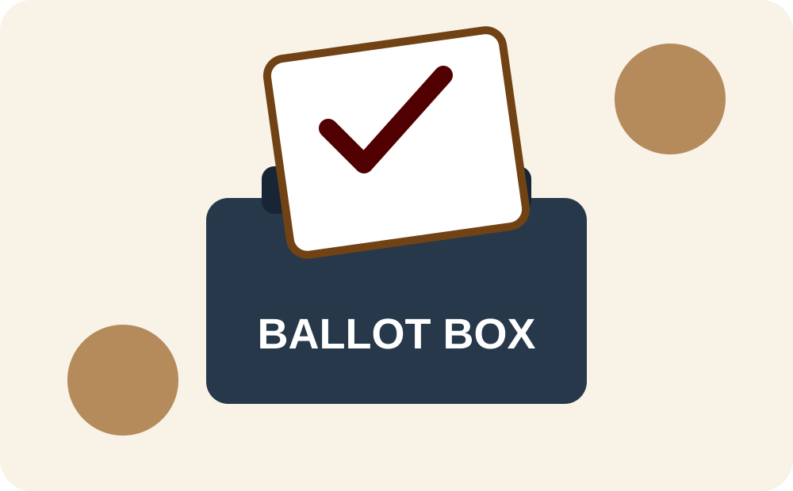

Why election administration matters
Election administration combines public service, logistics, technology, law, communication, and careful recordkeeping. This page highlights several parts of the process.

Major parts of an election
-
Before Election Day
- Register eligible voters
- Prepare polling locations
- Test voting equipment
-
During Voting
- Verify voter eligibility
- Provide clear procedural guidance
- Protect ballot privacy
-
After Polls Close
- Secure election materials
- Reconcile records
- Report unofficial results
Election information video
This embedded video explains how elections and voting systems operate.
Interactive Tableau election dashboard
Use the controls inside the visualization to explore the data interactively.